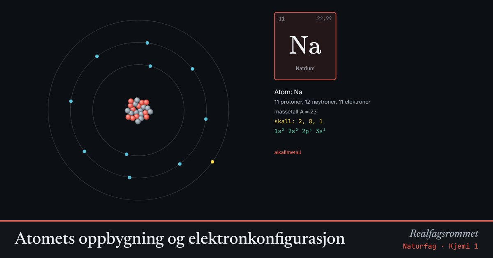

Atomets oppbygning og elektronkonfigurasjon
Antall protoner bestemmer hvilket grunnstoff det er. Elektronene fyller skallene innenfra og ut, og de ytterste elektronene, valenselektronene, bestemmer de kjemiske egenskapene.
Start animasjonen
Formler
Om animasjonen
Kjernen består av protoner (røde) og nøytroner (grå). Elektronene går i skall rundt kjernen. De gule er valenselektronene i det ytterste skallet.
Atomer blir ofte ioner for å få edelgasskonfigurasjon, med fullt ytterste skall. Natrium gir fra seg ett elektron og blir Na⁺. Klor tar opp ett og blir Cl⁻.
Orbitalnotasjonen viser hvordan elektronene fordeler seg på s-, p- og d-orbitaler. Fra kalium fylles 4s før 3d.
Prøv dette
- Finn alle grunnstoffene som har 1 valenselektron blant de 20 første. Hvor står de i periodesystemet?
- Lag ionet O²⁻. Hvilken edelgass har samme elektronkonfigurasjon?
- Hvorfor danner magnesium ionet Mg²⁺ og ikke Mg⁺?
- Skriv elektronkonfigurasjonen til jern (Z = 26) og til Fe³⁺.
Kompetansemål
- Naturfag: Kjemiske bindinger og stoffenes egenskaper
- Kjemi 1: Periodesystemet og elektronkonfigurasjon
Mer om atomer, periodesystemet og binding
- Periodesystemet og periodiske egenskaper
- Bohrs atommodell og linjespektre
- Kjemisk binding og elektronegativitet
- Molekylformer: elektronpar frastøter hverandre
- Kjemiske bindinger og stoffenes egenskaper